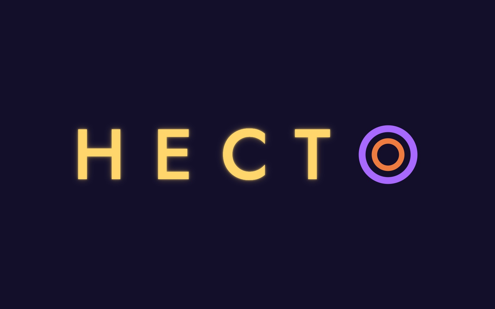
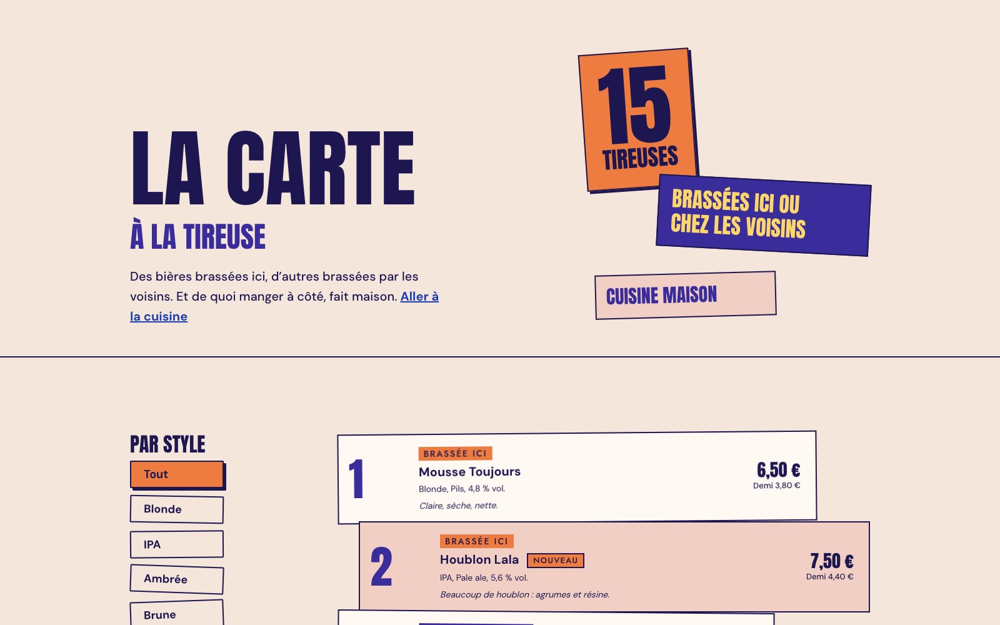
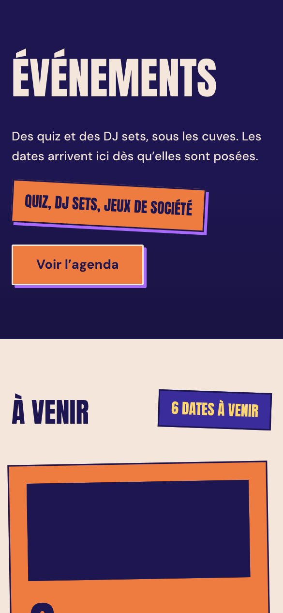
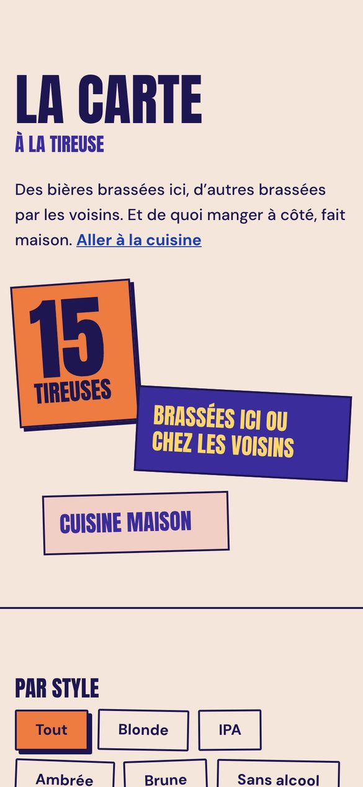
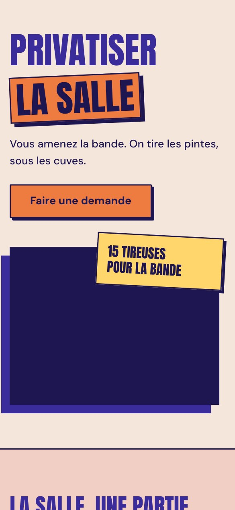
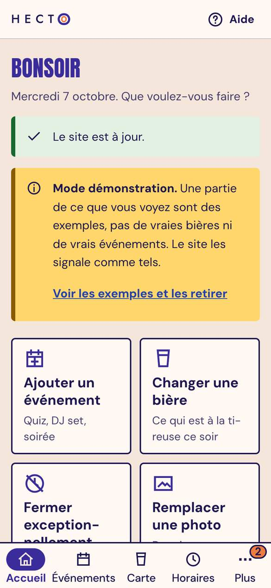
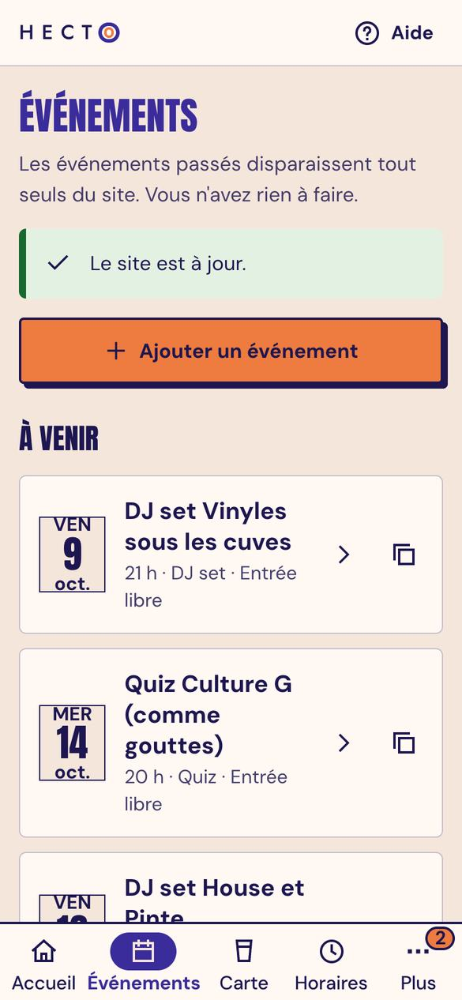
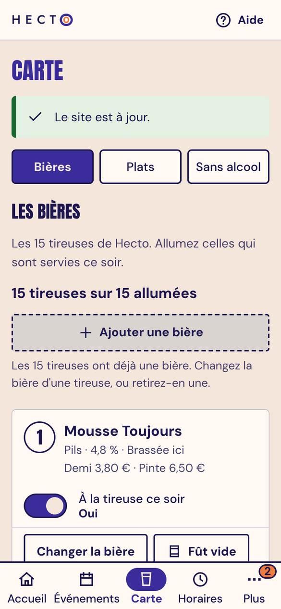
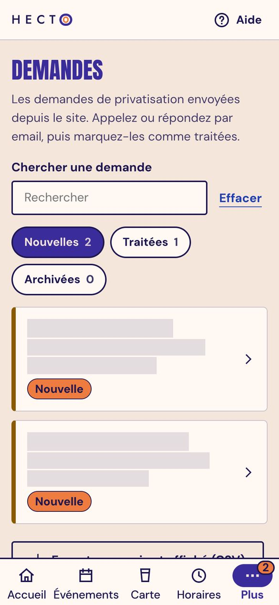
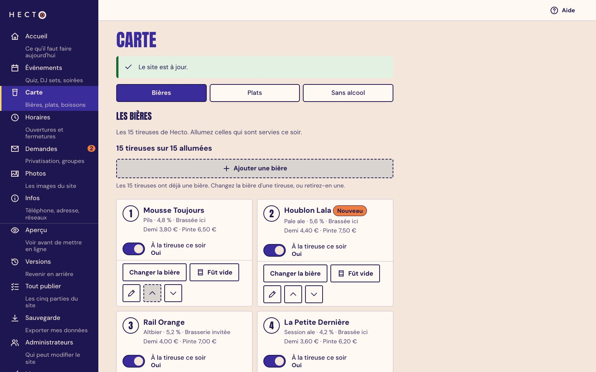

Hecto
Projet d'entraînement, client fictif, jamais mis en ligne.

Site vitrine et espace de gestion pour une brasserie, 2026. J'ai cadré, dirigé, testé et fait construire le projet par une équipe d'agents Claude Code pilotés dans cmux, un agent par rôle, de la stratégie à la livraison. HTML, CSS et JavaScript sans framework, Supabase, Cloudflare Pages. Projet réalisé par Clément Gosselin, Product Builder no-code et IA à Ynov Bordeaux.
Le projet
Le site. Une brasserie et bar à bières, avec sa vitrine en français et en anglais : accueil, carte des bières à la tireuse, événements, privatisation de la salle, la brasserie, infos pratiques. Elle charge vite et se lit même sans JavaScript. J'ai défini l'arborescence, la charte et les maquettes avant de faire construire les pages.
La gestion. Un espace pensé pour un gérant qui n'a pas le temps, d'abord sur téléphone : il change une bière quand un fût est vide, ajoute un événement, règle ses horaires, remplace une photo et répond aux demandes de privatisation. Il vérifie l'aperçu, puis appuie sur Mettre en ligne. La base garde le contenu et l'historique des versions, avec un retour en arrière possible. Les mêmes règles de validation s'appliquent côté site, côté gestion et côté base : une erreur de saisie ne casse jamais une page. Chaque rôle, du design à la recette, avait son agent, et c'est moi qui testais le résultat.









Le gérant touche une bière, appuie sur Mettre en ligne, et le site suit tout seul, sans développeur.